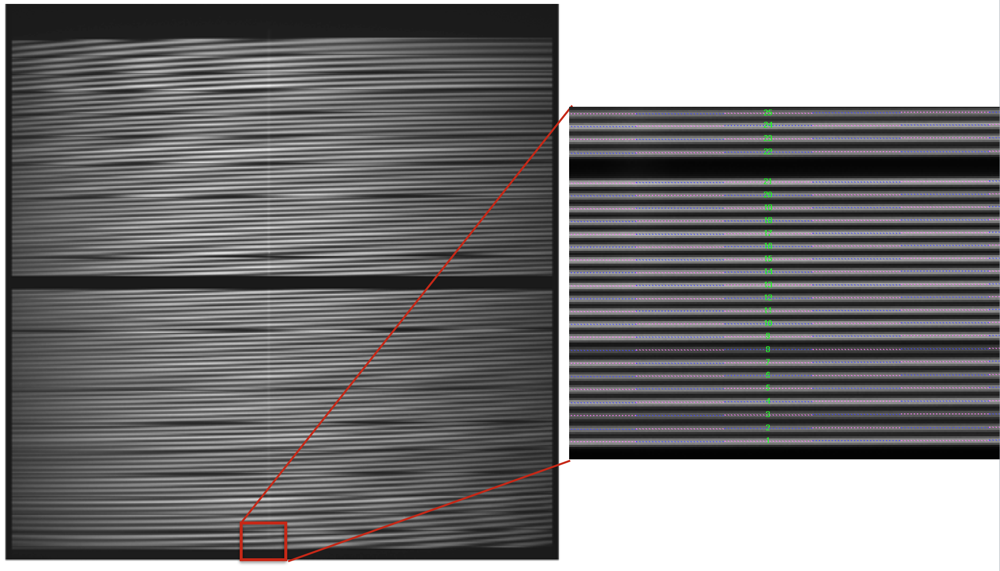
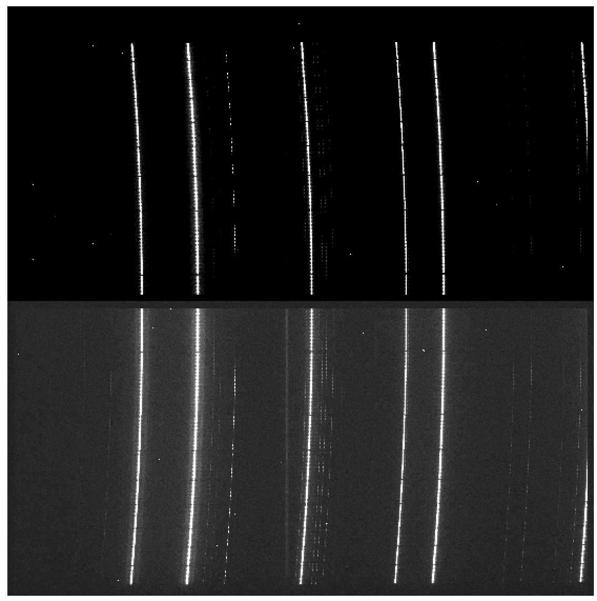

Data reduction
Getting Started
The first step to start the data reduction is to activate your environment (see details in section DRP installation).
The next step is to download the data employed in this cookbook: megara-cookbook-v2.tar.gz
If you find any trouble trying to download the previous file, try with the following command line:
(megara) $ curl -O https://guaix.fis.ucm.es/data/megaradrp/megara-cookbook-v2.tar.gz
Warning
Please be aware that this file has been updated as of September 2024. This
change has been motivated by the need to adapt the structure of the
control.yaml file to facilitate the EMIR reduction pipeline in handling
data obtained with a detector different from the one originally installed.
This type of change requires the use of specific calibration files for the
particular detector used at any given time. Once this file is modified for
EMIR, MEGARA also inherits the same change (the different pipelines use the
same Python package numina as the reduction launcher). The modification
of the control.yaml file is not backward compatible, so it is necessary to
have a recent version of megaradrp installed.
It is advisable to decompress the previous file in a pristine directory where you can comfortably start the reduction of the data:
(megara) $ tar zxvf megara-cookbook-v2.tar.gz
(megara) $ cd megara-cookbook-v2
(megara) $ source INSTALL.sh
The last command simply replaces the second line of the file
MEGARA/control.yaml to set the proper directory where the cookbook data
have been deployed.
Data organization
MEGARA DRP uses its own data organization to work.
(megara) $ tree -L 2
.
├── INSTALL.sh
└── MEGARA
├── M15_LCB_HR-R
├── M71_MOS_LR-R
├── ca3558e3-e50d-4bbc-86bd-da50a0998a48
└── control.yaml
Note that the tree command shown above might not be available in certain
unix distributions (you can use ls instead).
Under the MEGARA/ directory we need to have the calibration tree with
the specific name ca3558e3-e50d-4bbc-86bd-da50a0998a48/, which is the
string that uniquely identifies the instrument configuration (a
different name was, for example, used during laboratory integration at
LICA-UCM). Under the MEGARA/ directory we can also have the requirements
file named control.yaml needed to run the pipeline (see section
Running a recipe).
The requirements file control.yaml contains the path for your MEGARA/
directory (second line of this file; keyword rootdir),
and useful information for performing the wavelength calibration of each
VPH, including the number of arc lines and
degree of polynomial fit to be used by the wavelength calibration
recipe. In this file you can also specify the name for the extinction
curve file used for the flux calibration recipe. This is simply an ASCII
file with two space-separated columns, one with the wavelength in
Angstroms and another with the magnitudes of extinction per unit airmass
at the corresponding wavelength, i.e. the same format used for
extinction curves within IRAF. We strongly recommend to use the standard
extinction curve of the Roque de los Muchachos Observatory (file
extinction_LP.txt under the data subdirectory; see below).
1version: 1
2rootdir: /Users/janedoe/megara-cookbook-v2
3products:
4 MEGARA:
5 ca3558e3-e50d-4bbc-86bd-da50a0998a48:
6 - {id: 2, type: 'ReferenceExtinctionTable', tags: {}, content: 'extinction_LP.txt'}
7requirements:
8 MEGARA:
9 ca3558e3-e50d-4bbc-86bd-da50a0998a48:
10 default:
11 MegaraArcCalibration:
12 - {name: nlines, tags: {vph: LR-U, speclamp: ThAr, insmode: LCB}, content: [25,25]}
13 - {name: nlines, tags: {vph: LR-U, speclamp: ThAr, insmode: MOS}, content: [25,25]}
14 - {name: nlines, tags: {vph: LR-B, speclamp: ThAr, insmode: LCB}, content: [10,10,15,5]}
15 - {name: nlines, tags: {vph: LR-B, speclamp: ThAr, insmode: MOS}, content: [10,10,15,5]}
16 - {name: nlines, tags: {vph: LR-V, speclamp: ThAr, insmode: LCB}, content: [15,5,10,7]}
17 - {name: nlines, tags: {vph: LR-V, speclamp: ThAr, insmode: MOS}, content: [15,5,10,7]}
18 - {name: nlines, tags: {vph: LR-R, speclamp: ThAr, insmode: LCB}, content: [14,7]}
19 - {name: nlines, tags: {vph: LR-R, speclamp: ThAr, insmode: MOS}, content: [14,7]}
20 - {name: nlines, tags: {vph: LR-I, speclamp: ThAr, insmode: LCB}, content: [14]}
21 - {name: nlines, tags: {vph: LR-I, speclamp: ThAr, insmode: MOS}, content: [14]}
22 - {name: nlines, tags: {vph: LR-Z, speclamp: ThNe, insmode: LCB}, content: [14,9]}
23 - {name: nlines, tags: {vph: LR-Z, speclamp: ThNe, insmode: MOS}, content: [14,9]}
24 - {name: nlines, tags: {vph: MR-U, speclamp: ThAr, insmode: LCB}, content: [8,10]}
25 - {name: nlines, tags: {vph: MR-U, speclamp: ThAr, insmode: MOS}, content: [8,10]}
26 - {name: nlines, tags: {vph: MR-UB, speclamp: ThAr, insmode: LCB}, content: [20]}
27 - {name: nlines, tags: {vph: MR-UB, speclamp: ThAr, insmode: MOS}, content: [20]}
28 - {name: nlines, tags: {vph: MR-B, speclamp: ThAr, insmode: LCB}, content: [11]}
29 - {name: nlines, tags: {vph: MR-B, speclamp: ThAr, insmode: MOS}, content: [11]}
30 - {name: nlines, tags: {vph: MR-G, speclamp: ThAr, insmode: LCB}, content: [10,10,8]}
31 - {name: nlines, tags: {vph: MR-G, speclamp: ThAr, insmode: MOS}, content: [10,10,8]}
32 - {name: nlines, tags: {vph: MR-V, speclamp: ThAr, insmode: LCB}, content: [13,8]}
33 - {name: nlines, tags: {vph: MR-V, speclamp: ThAr, insmode: MOS}, content: [13,8]}
34 - {name: nlines, tags: {vph: MR-VR, speclamp: ThNe, insmode: LCB}, content: [14]}
35 - {name: nlines, tags: {vph: MR-VR, speclamp: ThNe, insmode: MOS}, content: [14]}
36 - {name: nlines, tags: {vph: MR-R, speclamp: ThNe, insmode: LCB}, content: [9]}
37 - {name: nlines, tags: {vph: MR-R, speclamp: ThNe, insmode: MOS}, content: [9]}
38 - {name: nlines, tags: {vph: MR-RI, speclamp: ThNe, insmode: LCB}, content: [7]}
39 - {name: nlines, tags: {vph: MR-RI, speclamp: ThNe, insmode: MOS}, content: [7]}
40 - {name: nlines, tags: {vph: MR-I, speclamp: ThNe, insmode: LCB}, content: [5,5,5]}
41 - {name: nlines, tags: {vph: MR-I, speclamp: ThNe, insmode: MOS}, content: [5,5,5]}
42 - {name: nlines, tags: {vph: MR-Z, speclamp: ThNe, insmode: LCB}, content: [4,5,3]}
43 - {name: nlines, tags: {vph: MR-Z, speclamp: ThNe, insmode: MOS}, content: [4,5,3]}
44 - {name: nlines, tags: {vph: HR-R, speclamp: ThNe, insmode: LCB}, content: [5]}
45 - {name: nlines, tags: {vph: HR-R, speclamp: ThNe, insmode: MOS}, content: [5]}
46 - {name: nlines, tags: {vph: HR-I, speclamp: ThNe, insmode: LCB}, content: [10]}
47 - {name: nlines, tags: {vph: HR-I, speclamp: ThNe, insmode: MOS}, content: [10]}
48 - {name: polynomial_degree, tags: {vph: LR-U, speclamp: ThAr}, content: [3,5]}
49 - {name: polynomial_degree, tags: {vph: LR-B, speclamp: ThAr}, content: [5,5]}
50 - {name: polynomial_degree, tags: {vph: LR-V, speclamp: ThAr}, content: [5,5]}
51 - {name: polynomial_degree, tags: {vph: LR-R, speclamp: ThAr}, content: [3,5]}
52 - {name: polynomial_degree, tags: {vph: LR-I, speclamp: ThAr}, content: [3,5]}
53 - {name: polynomial_degree, tags: {vph: LR-Z, speclamp: ThNe}, content: [3,5]}
54 - {name: polynomial_degree, tags: {vph: MR-U, speclamp: ThAr}, content: [3,5]}
55 - {name: polynomial_degree, tags: {vph: MR-UB, speclamp: ThAr}, content: [3,5]}
56 - {name: polynomial_degree, tags: {vph: MR-B, speclamp: ThAr}, content: [3,5]}
57 - {name: polynomial_degree, tags: {vph: MR-G, speclamp: ThAr}, content: [3,5]}
58 - {name: polynomial_degree, tags: {vph: MR-V, speclamp: ThAr}, content: [3,5]}
59 - {name: polynomial_degree, tags: {vph: MR-VR, speclamp: ThNe}, content: [3,5]}
60 - {name: polynomial_degree, tags: {vph: MR-R, speclamp: ThNe}, content: [3,3]}
61 - {name: polynomial_degree, tags: {vph: MR-RI, speclamp: ThNe}, content: [3,3]}
62 - {name: polynomial_degree, tags: {vph: MR-I, speclamp: ThNe}, content: [3,5]}
63 - {name: polynomial_degree, tags: {vph: MR-Z, speclamp: ThNe}, content: [3,3]}
64 - {name: polynomial_degree, tags: {vph: HR-R, speclamp: ThNe}, content: [3,5]}
65 - {name: polynomial_degree, tags: {vph: HR-I, speclamp: ThNe}, content: [3,5]}
Another fundamental function of the calibration tree
(ca3558e3-e50d-4bbc-86bd-da50a0998a48/) is to host the calibration
products that will be used by the corresponding recipes, such as the
MasterBias, MasterFiberFlat, MasterSensitivity, etc. Thus, once the
files for these calibrations are generated, they should be copied under
this calibration tree according structure below. Since the DRP would
read the first file in alphabetical order inside the corresponding
folder, we recommend to place only one file in each folder.
(megara) $ tree -L 2 ca3558e3-e50d-4bbc-86bd-da50a0998a48
ca3558e3-e50d-4bbc-86bd-da50a0998a48
├── LinesCatalog
│ ├── ThAr
│ └── ThNe
├── MasterBPM
│ └── master_bpm.fits
├── MasterBias
├── MasterFiberFlat
│ ├── LCB
│ └── MOS
├── MasterSensitivity
│ ├── LCB
│ └── MOS
├── MasterSlitFlat
├── MasterTwilightFlat
│ ├── LCB
│ └── MOS
├── ModelMap
│ ├── LCB
│ └── MOS
├── TraceMap
│ ├── LCB
│ └── MOS
└── WavelengthCalibration
├── LCB
└── MOS
The content for the LinesCatalog/ is specific for each VPH (line lists
for all VPHs can be found at
https://zenodo.org/record/2270518). In the following
example the calibration files for the HR-R (LCB observing mode) and LR-R
(MOS observing mode) VPHs are shown. When other VPHs are used, the user
just needs to create the corresponding folders. It is recommended to
have only one file in each calibration directory. For example, for the
same VPH you can have several master_traces.json files with the
information to trace the fibers light through the detector at the same
day but at different ambient temperatures.
Different files can be stored at the same directory, but the DRP is
going to use the first file it encounters in alphabetical order. The
user can name the desired file with prefix 00_ (e.g.
00_master_traces.json) to be sure this is the file to be used by the
DRP. Note that the sorting of files named 00_ and 000_ might
be different for the operative system and for the MEGARA DRP, so avoid
making abusive use of these prefixes.
An example of calibration tree with some additional calibration files is the following:
(megara) $ tree ca3558e3-e50d-4bbc-86bd-da50a0998a48/ -L 4
ca3558e3-e50d-4bbc-86bd-da50a0998a48/
├── LinesCatalog
│ ├── ThAr
│ │ ├── LR-R
│ │ │ └── LR-R_ThAr.lis
│ │ .
│ │ .
│ │ .
│ └── ThNe
│ ├── HR-R
│ │ └── HR-R_ThNe.lis
│ .
│ .
│ .
├── MasterBPM
│ └── master_bpm.fits
├── MasterBias
│ └── master_bias.fits
├── MasterFiberFlat
│ ├── LCB
│ │ └── HR-R
│ │ └── master_fiberflat.fits
│ └── MOS
│ └── LR-R
│ └── master_fiberflat.fits
├── MasterSensitivity
│ ├── LCB
│ │ └── HR-R
│ │ └── master_sensitivity.fits
│ └── MOS
│ └── LR-R
│ └── master_sensitivity.fits
├── MasterSlitFlat
│
├── MasterTwilightFlat
│ └── LCB
│ └── HR-R
│ └── master_twilightflat.fits
├── ModelMap
│ ├── LCB
│ │ └── HR-R
│ │ └── master_model.json
│ └── MOS
│ └── LR-R
│ └── master_model.json
├── TraceMap
│ ├── LCB
│ │ └── HR-R
│ │ └── master_traces.json
│ └── MOS
│ └── LR-R
│ └── master_traces.json
└── WavelengthCalibration
├── LCB
│ └── HR-R
│ └── master_wlcalib.json
└── MOS
└── LR-R
└── master_wlcalib.json
Furthermore, the user’s MEGARA/ directory can contain data for your
targets under different directories (in this example our targets are the
M15 and M71 globular clusters). Your raw data should always be
included in a subdirectory named data/ within each working target
directory (M15, M71, etc.). Images could be stored gzipped but then the
observation-result files should list the images with the .gz extension.
The different observation-result files (*.yaml) used during the data
reduction process should be also located within each target directory as
they will be different for each target. In this example, the
observation-result files in YAML format are named with a first number
related in which order they are run.
(megara) $ tree M15_LCB_HR-R
M15_LCB_HR-R
├── 0_Bias.yaml
├── 1_TraceMap.yaml
├── 2_ModelMap.yaml
├── 3_WaveCalib.yaml
├── 3_WaveCalib_check.yaml
├── 4_FiberFlat.yaml
├── 5_TwilightFlat.yaml
├── 6_LcbAdquisition.yaml
├── 7_StandardStar.yaml
├── 8_LcbImage.yaml
└── data
├── 0001251794-20170626-MEGARA-MegaraLCBImage.fits
├── 0001251795-20170626-MEGARA-MegaraLCBImage.fits
├── ...
├── 0001312250-20170831-MEGARA-MegaraSuccess.fits
├── 0001312251-20170831-MEGARA-MegaraSuccess.fits
├── extinction_LP.txt
└── mbd284211_stis.dat
Running a recipe
The MEGARA DRP is run through a command line interface provided by numina.
Note
Remember that the numina script is the interface with GTC pipelines.
In order to execute megaradrp recipes you should type something like:
(megara) $ numina run <observation_result_file.yaml> -r <requirements_file.yaml>
where <observation_result_file.yaml> is an observation result file in
YAML format, and <requirements_files.yaml> is a requirements file, also
in YAML format (this file is named control.yaml).
YAML is a human-readable data serialization language (for details see YAML Syntax)
The run mode of numina requires:
An observation-result file in YAML format.
A requirements file in YAML format (
control.yaml).The raw images obtained as part of the user’s observing block.
The calibrations required by the recipe.
The observation-result file and the requirements file are created by the
user. This is an example of the observation result file to compute the
fibers traces 1_TraceMap.yaml under the subdirectory M15_LCB-HR-R:
The id: is an identifier of the observing block. The DRP will
create two directories with the products of the recipe (obsid<id>_work/ and
obsid<id>_results/) using the id identifier as an arbitray label to
identify
the corresponding processing block. The mode: is the name of the
instrument observing mode as returned by numina show-modes. In
frames: a list of the names of the images obtained as part of the
observation should be included.
Using the same YAML file the user can process sequentially different sets of
files with the same recipe. For that purpose, the enabled: parameter can be
set to True (or False) to process (or not) a specific block of files. In
this case, do not forget the separation line --- between blocks (otherwise
the pipeline will not recognize where one block ends and the next one begins).
This separation line must not appear after the last block.
Note that the user can add comments to these YAML files by adding lines
preceded with a hash sign (#).
An example of an observation-result file with two blocks is the following:
(megara) $ more 1_TraceMap.yaml
id: 1_TraceMap_HR-R
mode: MegaraTraceMap
instrument: MEGARA
frames:
- 0001312246-20170831-MEGARA-MegaraSuccess.fits
- 0001312247-20170831-MEGARA-MegaraSuccess.fits
- 0001312248-20170831-MEGARA-MegaraSuccess.fits
enabled: True
---
id: 1_TraceMap_HR-R_d29jun
mode: MegaraTraceMap
instrument: MEGARA
frames:
- 0001252371-20170629-MEGARA-MegaraFiberFlatImage.fits
- 0001252372-20170629-MEGARA-MegaraFiberFlatImage.fits
- 0001252373-20170629-MEGARA-MegaraFiberFlatImage.fits
enabled: True
In the directory of our target M15 we have already defined several
observation-result files (*.yaml):
(megara) $ pwd
/Users/janedoe/megara-cookbook-v2/MEGARA/M15_LCB_HR-R
(megara) $ ls
0_Bias.yaml 3_WaveCalib_check.yaml 7_StandardStar.yaml
1_TraceMap.yaml 4_FiberFlat.yaml 8_LcbImage.yaml
2_ModelMap.yaml 5_TwilightFlat.yaml data/
3_WaveCalib.yaml 6_LcbAdquisition.yaml
If we want to run the recipe MegaraTraceMap using the observing-result file
1_TraceMap.yaml, with the requirements file control.yaml (the latter
located in the directory above the current one), we should execute:
(megara) $ numina run 1_TraceMap.yaml -r ../control.yaml
When disk space is an issue, it is possible to execute numina indicating
that links (instead of actual copies of the original raw files) must be placed
in the obsid<id>_work/ subdirectory. This behaviour is set using the
parameter --link-files:
(megara) $ numina run 1_TraceMap.yaml --link-files -r ../control.yaml
Other useful numina commands include:
(megara) $ numina show-modes
(megara) $ numina show-recipes
(megara) $ numina show-recipes -m <obs mode>
(megara) $ numina run -h
(megara) $ numina run 1_TraceMap.yaml -r ../control.yaml –enable <block_id>
Data reduction process
In the following sections the different steps to produce the target wavelength and flux calibrated row-stacked spectra (RSS) are detailed. The examples are illustrated making use of the cookbook data available for the target M15:
(megara) $ pwd
/Users/janedoe/megara-cookbook-v2/MEGARA/M15_LCB_HR-R
You can easily examine the header of the FITS images using the astropy utility
fitsheader:
(megara) $ fitsheader -k VPH -k INSMODE -k OBJECT -k SPECLAMP -k EXPTIME -k DATE-OBS \
-f -e 0 data/*.fits
filename VPH INSMODE OBJECT SPECLAMP EXPTIME DATE-OBS
--------------------------------------------------------- ----- ------- ------- -------- ------- ----------------------
data/0001251794-20170626-MEGARA-MegaraLCBImage.fits HR-R LCB NONE 60.0 2017-06-27T06:09:11.24
data/0001251795-20170626-MEGARA-MegaraLCBImage.fits HR-R LCB NONE 60.0 2017-06-27T06:11:59.96
data/0001251796-20170626-MEGARA-MegaraLCBImage.fits HR-R LCB NONE 60.0 2017-06-27T06:14:58.28
data/0001286973-20170724-MEGARA-MegaraLcbImage.fits HR-R LCB BD28 NONE 200.0 2017-07-25T03:50:28.63
data/0001286974-20170724-MEGARA-MegaraLcbImage.fits HR-R LCB BD28 NONE 200.0 2017-07-25T03:55:02.94
data/0001286975-20170724-MEGARA-MegaraLcbImage.fits HR-R LCB BD28 NONE 200.0 2017-07-25T03:59:37.22
data/0001309955-20170822-MEGARA-MegaraLcbAcquisition.fits HR-R LCB M15 NONE 60.0 2017-08-23T00:05:33.93
data/0001309956-20170822-MEGARA-MegaraLcbAcquisition.fits HR-R LCB M15 NONE 60.0 2017-08-23T00:07:49.18
data/0001309957-20170822-MEGARA-MegaraLcbAcquisition.fits HR-R LCB M15 NONE 60.0 2017-08-23T00:10:03.43
data/0001310880-20170827-MEGARA-MegaraBiasImage.fits MR-RI LCB Bias NONE 0.0 2017-08-27T17:10:39.54
data/0001310881-20170827-MEGARA-MegaraBiasImage.fits MR-RI LCB Bias NONE 0.0 2017-08-27T17:11:53.93
data/0001310882-20170827-MEGARA-MegaraBiasImage.fits MR-RI LCB Bias NONE 0.0 2017-08-27T17:13:08.24
data/0001310883-20170827-MEGARA-MegaraBiasImage.fits MR-RI LCB Bias NONE 0.0 2017-08-27T17:14:22.58
data/0001310884-20170827-MEGARA-MegaraBiasImage.fits MR-RI LCB Bias NONE 0.0 2017-08-27T17:15:36.89
data/0001310885-20170827-MEGARA-MegaraBiasImage.fits MR-RI LCB Bias NONE 0.0 2017-08-27T17:16:51.23
data/0001310886-20170827-MEGARA-MegaraBiasImage.fits MR-RI LCB Bias NONE 0.0 2017-08-27T17:18:05.53
data/0001310887-20170827-MEGARA-MegaraBiasImage.fits MR-RI LCB Bias NONE 0.0 2017-08-27T17:19:19.83
data/0001310888-20170827-MEGARA-MegaraBiasImage.fits MR-RI LCB Bias NONE 0.0 2017-08-27T17:20:34.16
data/0001312246-20170831-MEGARA-MegaraSuccess.fits HR-R LCB Halogen NONE 5.0 2017-08-31T18:09:14.73
data/0001312247-20170831-MEGARA-MegaraSuccess.fits HR-R LCB Halogen NONE 5.0 2017-08-31T18:10:34.05
data/0001312248-20170831-MEGARA-MegaraSuccess.fits HR-R LCB Halogen NONE 5.0 2017-08-31T18:11:53.38
data/0001312249-20170831-MEGARA-MegaraSuccess.fits HR-R LCB Halogen ThNe 30.0 2017-08-31T18:13:38.10
data/0001312250-20170831-MEGARA-MegaraSuccess.fits HR-R LCB Halogen ThNe 30.0 2017-08-31T18:15:22.38
data/0001312251-20170831-MEGARA-MegaraSuccess.fits HR-R LCB Halogen ThNe 30.0 2017-08-31T18:17:06.67
data/master_fiberflat_ones.fits -- -- -- -- -- --
The data available include bias exposures (the VPH is not relevant here), halogen exposures (for tracing and flatfielding), ThNe arc exposures (for wavelength calibration), and target exposures.
Bias image
Before the Analog-to-Digital conversion is performed a pedestal (electronic) level is added to all images obtained with the MEGARA CCD. This is a standard procedure in CCD imaging and spectroscopy applications for Astronomy and is intended to minimize the ADC errors produced when very low analog values are converted to DUs. To calibrate this pedestal level of the detectors, bias images are taking with null integration time. We note the user that in the case of the MEGARA CCD (a 4k x 4k pixels CCD231-84 E2V chip), since the detector is always read using two diagonally-opposed amplifiers (to speed up the reading process while minimizing electronic cross-talk), the bias is slightly different in the upper and bottom halves of the image. Note that the Readout Noise (RoN) should be around 2 e– in all cases.
This recipe processes a set of bias images obtained in Bias Image instrument mode. Images are corrected from overscan and trimmed to the physical size of the detector. Then, they are corrected from Bad-pixels Mask, if the BPM is available and finally, images are stacked using the median.
The content of the file 0_Bias.yaml for the M15 data is the following:
1id: 0_Bias
2mode: MegaraBiasImage
3instrument: MEGARA
4frames:
5 - 0001310880-20170827-MEGARA-MegaraBiasImage.fits
6 - 0001310881-20170827-MEGARA-MegaraBiasImage.fits
7 - 0001310882-20170827-MEGARA-MegaraBiasImage.fits
8 - 0001310883-20170827-MEGARA-MegaraBiasImage.fits
9 - 0001310884-20170827-MEGARA-MegaraBiasImage.fits
10 - 0001310885-20170827-MEGARA-MegaraBiasImage.fits
11 - 0001310886-20170827-MEGARA-MegaraBiasImage.fits
12 - 0001310887-20170827-MEGARA-MegaraBiasImage.fits
13 - 0001310888-20170827-MEGARA-MegaraBiasImage.fits
The recipe is run as follows,
(megara) $ numina run 0_Bias.yaml --link-files -r ../control.yaml
and the products are stored in the directory obsid0_Bias_results/,
including the master_bias.fits file (see Figure 4).
(megara) $ ls obsid0_Bias_work/
0001310880-20170827-MEGARA-MegaraBiasImage.fits@
0001310881-20170827-MEGARA-MegaraBiasImage.fits@
0001310882-20170827-MEGARA-MegaraBiasImage.fits@
0001310883-20170827-MEGARA-MegaraBiasImage.fits@
0001310884-20170827-MEGARA-MegaraBiasImage.fits@
0001310885-20170827-MEGARA-MegaraBiasImage.fits@
0001310886-20170827-MEGARA-MegaraBiasImage.fits@
0001310887-20170827-MEGARA-MegaraBiasImage.fits@
0001310888-20170827-MEGARA-MegaraBiasImage.fits@
index.pkl
master_bpm.fits@
(megara) $ ls obsid0_Bias_results/
master_bias.fits processing.log result.json task.json
Note that the data files in the obsid0_Bias_work subdirectory are shown
with a suffix @, indicating that these files are actually links the the
original files (stored under the data subdirectory).
{kind=link}
Figure 4: Example of a MEGARA master bias as created by the MegaraBiasImage recipe. Note that this image was obtained with the MEGARA DRP ver. 0.9. Later versions fit a spline to the overscan regions of both amplifiers (instead of adopting a constant value) so the resulting image is typically flatter than the example shown here.
The user needs to copy the file master_bias.fits to the calibration tree at
ca3558e3-e50d-4bbc-86bd-da50a0998a48/MasterBias/:
(megara) $ cp obsid0_Bias_results/master_bias.fits \
../ca3558e3-e50d-4bbc-86bd-da50a0998a48/MasterBias
Dark image
The potential wells in CCD detectors spontaneously generate electron-ion pairs at a rate that is a function of temperature. For very long exposures this translates into a current that is associated with no light source and that is commonly referred to as dark current. Different tests during AIV activities have shown MEGARA detector´s dark current has very low values < 2 e-/h/pixel, therefore in our data reduction dark images are neither needed nor used.
Bad-pixels Mask
Although science-grade CCD detectors show very few bad pixels / bad
columns there will be a number of pixels (among the ~17 Million pixels
in the MEGARA CCD) whose response could not be corrected by means of
using calibration images such as dark frames or flat-field images. These
pixels, commonly called either dead or hot pixels, should be identified
and masked so their expected signal could be derived using dithered
images or, alternatively, locally interpolated. The user is provided
with a Bad-Pixels Mask (BPM) named master_bpm.fits and located at
ca3558e3-e50d-4bbc-86bd-da50a0998a48/MasterBPM/ that was generated as
part of the AIV activities by processing a set of defocused continuum
flat images. This image can be also found at
https://zenodo.org/record/2270518. Currently, MEGARA
presents only one (partial) bad column of 120 pixels in length.
Slit Flat correction
In the case of fiber-fed spectrographs the correction for the detector pixel-to-pixel variation of the sensibility is usually carried out using data from laboratory, where the change in efficiency of the detector at different wavelengths is computed and then used to correct for this effect for each specific instrument configuration (VPH setup in the case of MEGARA).
The quality of present-day CCDs leads to a rather small impact of these pixel-to-pixel variations in sensitivity on either the flux calibration and the cosmetics of the scientific images, especially considering that not one but a number of pixels along the spatial direction are extracted for each fiber and at each wavelength. In the case of MEGARA, the pseudo-slit has been offset from its optical focus position to ensure that the gaps between fibers are also illuminated when a continuum (halogen) lamp at the ICM is used. The results of the analysis of the pixel-to-pixel variations in sensitivity show that this correction is actually not needed although this recipe is implemented in the MEGARA DRP.
Tracing fibers
Trace map
The next processing step combine a series of fiber-flats to generate a master trace map. The fiber-flats are obtained by illuminating the instrument focal plane with a continuum (halogen) lamp that is part of the GTC Instrument Calibration Module (ICM).
This step produces the tracing information required to extract the flux
of the fibers. The result is stored in a file named
master_traces.json.
An example of the observation result file 1_TraceMap.yaml to trace the
fibers is the following:
Then the recipe is run by doing:
(megara) $ numina run 1_TraceMap.yaml --link-files -r ../control.yaml
Images listed in the observation-result file are trimmed and corrected
from overscan, bad-pixel mask (if master_bpm.fits is present in the
calibration tree), bias and
dark current (if master_dark.fits is present). Images thus corrected are
then median stacked. The result of the combination is saved as an
intermediate result that is named reduced_image.fits. This
combined image is also returned in the field reduced_image of the
recipe result and will be used for doing some quality control on the
tracing of the fibers.
The fibers are then grouped in packs of different numbers of fibers. To
match the traces in the image with the corresponding fibers, the DRP
uses the information provided by the instrument configuration to know
how fibers are packed and where the different groups of fibers appear in
the detector. Using the column reference 2000, peaks are detected (using
an average of 7 columns) and matched to the layout of fibers. Fibers
without a matching peak are counted and their ids stored in the final
master_traces.json file. Once the peaks in the reference column are
found, each one is traced until the border of the image is reached. The
trace may be lost before reaching the border. In all cases, the
beginning and the end of the trace are stored.
The Y position of the trace is fitted to a polynomial of degree
polynomial_degree set to 5 by default. The coefficients of the
polynomial are stored in the final master_traces.json file.
(megara) $ ls obsid1_TraceMap_HR-R_work/
0001312246-20170831-MEGARA-MegaraSuccess.fits@
0001312247-20170831-MEGARA-MegaraSuccess.fits@
0001312248-20170831-MEGARA-MegaraSuccess.fits@
cut_col2000_00_8b.png
cut_col2000_01_7b.png
cut_col2000_02_6b.png
cut_col2000_03_5b.png
cut_col2000_04_4b.png
cut_col2000_05_3b.png
cut_col2000_06_2b.png
cut_col2000_07_1b.png
cut_col2000_08_0.png
cut_col2000_09_1a.png
cut_col2000_10_2a.png
cut_col2000_11_3a.png
cut_col2000_12_4a.png
cut_col2000_13_5a.png
cut_col2000_14_6a.png
cut_col2000_15_7a.png
cut_col2000_16_8a.png
ds9.reg
ds9_raw.reg
frontiers_between_pseudoslits.png
index.pkl
master_bias.fits@
master_bpm.fits@
offset_borders_cross.png
reduced_image.fits
(megara) $ ls obsid1_TraceMap_HR-R_results
master_traces.json reduced_image.fits result.json
processing.log reduced_rss.fits task.json
The position of the fibers traces at the detector are shifted depending on the ambient temperature. It is recommended to have continuum halogen exposures near in time to the observation of the scientific target. If this is not the case, the traces can be shifted easily when processing the target (see below).
The traces generated by this task can be visualized both on the raw or the processed images and can be also shifted to consider possible offsets between these traces and the position in the fibers in other images (twilight flats, standard star or scientific target observations, etc.). The visualization of the traces and an underlying reduced image can be done by executing:
(megara) $ megaradrp-overplot_traces \
obsid1_TraceMap_HR-R_results/reduced_image.fits \
obsid1_TraceMap_HR-R_results/master_traces.json
It is also possible to overplot the traces in the original raw data, making
using of the additional parameter --rawimage:
(megara) $ megaradrp-overplot_traces --rawimage \
data/0001312246-20170831-MEGARA-MegaraSuccess.fits \
obsid1_TraceMap_HR-R_results/master_traces.json
respectively for the reduced and raw images. Another way to check the
tracing is by overplotting the ds9 region files created by the DRP for
the traces on top of this reduced_image.fits by doing (syntax might vary):
(megara) $ ds9 obsid1_TraceMap_HR-R_results/reduced_image.fits \
-regions load obsid1_TraceMap_HR-R_work/ds9.reg
The same syntax can be used to check the offset between these traces and the position of the fibers in other images (arc-lamp, twilight, standard star and object images).
Finally, the user needs to copy this master_traces.json to the
corresponding place at the calibration tree. In this case, this trace map
corresponds to the VPH HR-R (LCB mode):
(megara) $ cp obsid1_TraceMap_HR-R_results/master_traces.json \
../ca3558e3-e50d-4bbc-86bd-da50a0998a48/TraceMap/LCB/HR-R
Model map
This recipe processes a set of continuum flat images obtained in Trace Map or Fiber Flat modes and returns the fiber profile information required to perform advanced fiber extraction in other recipes.
The set of files listed in the observation-result file 2_ModelMap.yaml
is the same one used for the Trace Map.
Then the recipe is run by doing:
(megara) $ numina run 2_ModelMap.yaml --link-files -r ../control.yaml
This processing step might take several minutes (from 10-40 min.) depending on the hardware used. When a model map is used the running times of the subsequent processing steps also increase by 2-5 minutes.
The images are processed as in the Trace Map recipe. In this case, the
approximate central position of the fibers is obtained from the
previously computed master_traces.json. Then, for every 100 columns of
the reduced image, a vertical cut in the image is fitted to a sum of
fiber profiles, being the profile a gaussian convolved with a square.
After the columns are fitted, the profiles (central position and sigma)
are interpolated to all columns using splines (see Figure 5). The
coefficients of the resulting splines are stored in the final
master_model.json file.
{kind=link}
{kind=link}
Figure 5: Mean position (left) and sigma (right) in pixels for fiber
#310 along the spectral axis shown as blue points. The red line shows
the spline fit. Plots for all the fibers are stored in the
obsid2_ModelMap_HR-R_work/ subdirectory.
The recipe also returns the RSS obtained by applying this advanced extraction to reduced_image. As an intermediate result, the recipe produces DS9 region files with the position of the center of the profiles, that can be used with raw and reduced images (see Figure 6).
{kind=link}
Figure 6: MEGARA LCB HR-R continuum halogen exposure (left) and a region
of the raw image (right) with the ds9_raw.reg tracing the fibers’ path
shown on top.
(megara) $ ls obsid2_ModelMap_HR-R_work/
0001312246-20170831-MEGARA-MegaraSuccess.fits@
0001312247-20170831-MEGARA-MegaraSuccess.fits@
0001312248-20170831-MEGARA-MegaraSuccess.fits@
ds9.reg
ds9_raw.reg
fib_001_mean.png
fib_001_std.png
fib_002_mean.png
fib_002_std.png
...
...
fib_622_mean.png
fib_622_std.png
index.pkl
master_bias.fits@
master_bpm.fits@
reduced_image.fits
(megara) $ ls obsid2_ModelMap_HR-R_results/
master_model.json reduced_image.fits result.json
processing.log reduced_rss.fits task.json
The user needs to copy this master_model.json to the corresponding
place at the calibration tree.
(megara) $ cp obsid2_ModelMap_HR-R_results/master_model.json \
../ca3558e3-e50d-4bbc-86bd-da50a0998a48/ModelMap/LCB/HR-R
Wavelength Calibration
In this processing step the wavelength solution for each fiber is created using recipe MegaraArcCalibration. To create the dispersion solution the recipe needs raw arc-lamp frames as input (see Figure 7). Note that although the term used is “arc-lamps” these are ThAr and ThNe Hollow-Cathode Lamps (HCL).
{kind=link}
Figure 7: MEGARA LCB ThNe arc-lamp exposure obtained with the HR-R VPH.
The user needs to check if the traces already computed in the previous step are appropriate to do the extraction in the arc-lamp exposures. If the continuum halogen used to generate the traces and the arc-lamp images were obtained near in time there no offset should be applied to the traces. By taking the images close in time user ensures that temperature remains constant so no offset is present. The offsets are estimated to be ~1 pixel per ºC/K of change in temperature. No offset in the spectral direction has been reported.
The user can check this and evaluate the actual offset
by plotting the ds9_raw.reg regions file on top of the arc-lamp raw
image using DS9. If the traces (regions in ds9_raw.reg) are above the
fiber as seen in the raw image, then the offset is a negative number and
it is measured in pixels, while if the traces are below then the offset
is a positive number. This offset is given in the requirements
section in the observation-result file using the extraction_offset
parameter.
In this case, the observation-result file is called 3_WaveCalib.yaml.
In the example below, three frames for arc lamp exposures are included
and the offset for the extraction is set to 0 pixels:
Then the recipe is run by doing:
(megara) $ numina run 3_WaveCalib.yaml --link-files -r ../control.yaml
Images provided in 3_WaveCalib.yaml are trimmed and corrected from
overscan, bad-pixel mask (if master_bpm.fits is present in the calibration
tree), bias and dark
current (if master_dark.fits is present). The corrected images are then
stacked using a median. The result of the combination of these images is
saved as an intermediate result, named reduced_image.fits. The
apertures in the 2D image are extracted, using the information in
master_traces.json (or in the model_map.json if this file is present
at the calibration tree) and the extraction_offset parameter set in
the 3_WaveCalib.yaml. The result of the extraction is saved as an
intermediate result named reduced_rss.fits. The requirement file
control.yaml has useful information for the wavelength calibration.
For each fiber in the reduced RSS, the peaks are detected and sorted by
peak intensity. Then, a total of nlines as listed in the
control.yaml file are used to select the brightest peaks. If it is a
list, then the peaks are divided, by their position, in as many groups
as elements in the list, and nlines[0] peaks are selected in the first
group, nlines[1] peaks in the second, etc. The selected peaks are then
matched against the catalog of lines located in the calibration tree at
ca3558e3-e50d-4bbc-86bd-da50a0998a48/LinesCatalog/. The wavelengths of
the matched features are fitted to a polynomial of degree equal to
polynomial_degree. The matched lines, the quality of the match and
other relevant information such as the coefficients of the polynomial
are stored in the final master_wlcalib.json for each fiber.
Finally, the recipe returns different products. At the
obsid3_WaveCalib_HR-R_work/ directory the files wavecal_iter1.pdf (for
the initial wavelength calibration) and wavecal_iter2.pdf (for the final
iteration) contain a graphical representation for the wavelength calibration
for each fiber. For example, in wavecal_iter2.pdf the total number of
lines used for the refined wavelength calibration and the root mean square for
each fit is plotted depending on the fiber number. In the same PDF file, the
linear approximation for CRVAL1 and CDELT1 is plotted and also a graph for each
coefficient (typically of 5th degree) of the polynomial fit used for
the refined wavelength calibration is shown (see Figure 8).
After the previous procedure, a refinement of the wavelength calibration is
performed by fitting a polynomial to the variation of each coefficient of the
wavelength calibration polynomial against the fiber number. Fibers whose
wavelength calibration polynomial does not fit the expected smooth variation of
the coefficients are automatically detected. In such cases, an interpolated
polynomial is used, which provides very good results. The results of this
refinment are graphically stored in the file wavecal_refine_iter1.pdf.
{kind=link}
Figure 8: Some of the plots included in the wavecalib_iter2.pdf file
generated with the MegaraArcCalibration recipe.
Should the user set the store_pdf_with_refined_fits parameter to
store_pdf_with_refined_fits: 1 at the 3_WaveCalib.yaml, the recipe will
create the subdirectory obsid3_WaveCalib_HR-R_work/refined_wavecal/ where a
collection of PDF files (one for each fiber) is created with graphical
information about the refined wavelength calibration (see Figure 9).
{kind=link}
Figure 9: Example of the refined wavelength calibration result for
fiber #310. This kind of file (310.pdf at refined_wavecalib/ in this
case) is generated when the parameter store_pdf_with_refined_fits is
set to 1. This requirement should be set to 0 for a faster execution of
this recipe.
(megara) $ ls obsid3_WaveCalib_HR-R_work/
0001312249-20170831-MEGARA-MegaraSuccess.fits@
0001312250-20170831-MEGARA-MegaraSuccess.fits@
0001312251-20170831-MEGARA-MegaraSuccess.fits@
index.pkl
initial_master_wlcalib.json
master_bias.fits@
master_bpm.fits@
reduced_image.fits
reduced_rss.fits
refined_wavecal/
wavecal_iter1.pdf
wavecal_iter2.pdf
wavecal_refine_iter1.pdf
(megara) $ ls obsid3_WaveCalib_HR-R_results/
fwhm_image.fits reduced_image.fits task.json
master_wlcalib.json reduced_rss.fits
processing.log result.json
The user needs to copy the master_wlcalib.json at the obsid_result/
directory to the corresponding place at the calibration tree:
(megara) $ cp obsid3_WaveCalib_HR-R_results/master_wlcalib.json \
../ca3558e3-e50d-4bbc-86bd-da50a0998a48/WavelengthCalibration/LCB/HR-R
To quickly check the wavelength calibration, it is possible to apply the newly
calculated calibration to the arc image itself. To do this, we can reduce the
arc exposures as if they were scientific exposures. We carry out this task
using the MegaraLcbAcquisition recipe. In this example, we execute this
task using the file 3_WaveCalib_check.yaml.
1id: 3_WaveCalib_check_HR-R
2mode: MegaraLcbAcquisition
3instrument: MEGARA
4frames:
5 - 0001312249-20170831-MEGARA-MegaraSuccess.fits
6 - 0001312250-20170831-MEGARA-MegaraSuccess.fits
7 - 0001312251-20170831-MEGARA-MegaraSuccess.fits
8requirements:
9 extraction_offset: [0.0]
10 master_fiberflat: master_fiberflat_ones.fits
Note that the images to be reduced correspond to the 3 individual arc
exposures. Among the requirements, we are using master_fiberflat:
master_fiberflat_ones.fits, a special FITS file located in the data
subdirectory that contains a fictitious flatfield image where all values are
set to 1.0. For the wavelength calibration check, we do not need to use a
correct master fiberflat image.
Then the recipe is run by doing:
(megara) $ numina run 3_WaveCalib_check.yaml --link-files -r ../control.yaml
The image to be examined is
obsid3_WaveCalib_check_HR-R_results/reduced_rss.fits. In this image, all
the arc line must appear as perfectly vertical lines.
(megara) $ numina-ximshow obsid3_WaveCalib_check_HR-R_results/reduced_rss.fits
{kind=link}
Flat-field correction
Each optical fiber in MEGARA behaves like a different optical system, and therefore, its optical transmission is different and individual, with different wavelength dependence.
The recipe MegaraFiberFlatImage computes the master_fiberflat.fits
to correct for the global variations in transmission in between fibers
and as a function of wavelength in MEGARA. A fiber-flat image should be
used to perform this correction. These images are obtained by means of
illuminating the instrument focal plane with a flat spectral source
(typically a halogen lamp) that is installed as part of the GTC
Instrument Calibration Module (ICM).
In this case, we called the observation result file 4_FiberFlat.yaml,
where a total of three continuum halogen exposures are included:
If the inputs frames are the same used to trace the fiber spectra on the
detector for the same specific spectral setup, the extraction_offset
parameter should be set to 0 pixels. If that is note the case the offset should
be evaluated and computed as detailed in Section Wavelength Calibration.
Then the recipe is run by doing:
(megara) $ numina run 4_FiberFlat.yaml --link-files -r ../control.yaml
All images listed in the observation-result file are trimmed and corrected from
overscan, bad pixel mask (if master_bpm.fits is present in the calibration
tree), bias and dark current (if master_dark.fits is present) and corrected
from pixel-to-pixel flat if master_slitflat.fits is provided. The corrected
images are then stacked using a median. The result of the combination is saved
as an intermediate result, named reduced_image.fits.
The apertures in the 2D image are extracted, using the information in
master_traces.json (or in the model_map.json if this file is present
at the calibration tree) and the extraction_offset parameter set in
the 4_FiberFlat.yaml, and then it is resampled according to the
wavelength calibration in master_wlcalib.json. The resulting RSS is
saved as an itnermediate result named reduced_rss.fits. To normalize
the master_fiberflat, each fiber is divided by the best-fitting spline
to the average of all valid fibers (see Figure 10). The RSS image
master_fiberflat.fits is returned as a recipe result (see Figure
11).
{kind=link}
Figure 10: Example of the collapsed_smooth.png file generated as part
of the MegaraFiberFlatImage recipe, which is located at the
obsid4_FiberFlat_HR-R_work/ directory. The green line is a spline fit to
the average of all valid fibers, which is then used to normalize the extracted
spectral in order to generate the normalized master_fiberflat image.
{kind=link}
Figure 11: Example of the master_fiberflat.fits file
generated for MEGARA LCB HR-R mode.
(megara) $ ls obsid4_FiberFlat_HR-R_work/
0001312246-20170831-MEGARA-MegaraSuccess.fits@
0001312247-20170831-MEGARA-MegaraSuccess.fits@
0001312248-20170831-MEGARA-MegaraSuccess.fits@
collapse.txt
collapsed_smooth.png
index.pkl
mask_noinfo.txt
master_bias.fits@
master_bpm.fits@
reduced_image.fits
reduced_rss.fits
(megara) $ ls obsid4_FiberFlat_HR-R_results/
master_fiberflat.fits reduced_image.fits result.json
processing.log reduced_rss.fits task.json
The user needs to copy the master_fiberflat.fits
to the corresponding place at the calibration tree:
(megara) $ cp obsid4_FiberFlat_HR-R_results/master_fiberflat.fits \
../ca3558e3-e50d-4bbc-86bd-da50a0998a48/MasterFiberFlat/LCB/HR-R
Illumination correction
Blank twilight-sky exposures are to be used to calibrate the global change in response introduced by the fiber flat. This is called the illumination correction and it is due to the fact that the GTC ICM does not produce a perfectly uniform illumination of the field and that the fraction and shape of the pupil that is seen by the MEGARA fibers during the observation of a specific target does not coincide with that seen during the acquisition of the fiber-flat images with the ICM.
The twilight sky exposure can safely assume to homogeneously illuminate the entire MEGARA field of view (3.5 arcmin x 3.5 arcmin for MOS mode and 12.5 x 11.3 sq. arcsec for LCB mode). However, since the telescope pupil is not circular and the alignment of the image of the pupil on top fibers by the microlenses is not identical for all fibers, in order to do this correction properly, the Rotator Angle of the FC-F rotator (ROTANG keyword in the raw image) and the Elevation of the telescope (ELEVAT keyword), and ideally also the temperature, should have the same values as the ones for the scientific observation. Furthermore, in case of MOS observing mode, the twilight sky exposures should be done with the robotic positioners placed at the same positions as for the targets’ configuration.
The recipe MegaraTwilightFlatImage process a set of continuum blank
twilight sky images and returns the master twilight flat product. In
this case, we named observation result file as 5_TwilightFlat.yaml, where
three frames for continuum blank twilight sky exposures being listed in
the file:
1id: 5_TwilightFlat_HR-R
2mode: MegaraTwilightFlatImage
3instrument: MEGARA
4frames:
5 - 0001251794-20170626-MEGARA-MegaraLCBImage.fits
6 - 0001251795-20170626-MEGARA-MegaraLCBImage.fits
7 - 0001251796-20170626-MEGARA-MegaraLCBImage.fits
8requirements:
9 extraction_offset: [+2.5]
10 normalize_region: [1550, 1700]
The extraction_offset parameter can be computed as
detailed in section Wavelength Calibration (see Figure 12).
{kind=link}
Figure 12: Example of a region in the raw blank twilight sky image
(LCB, HR-R) with the computed traces (ds9_raw.reg file) on top. In this
case a extraction_offset of +2.5 pixels was needed.
Then the recipe is run by doing:
(megara) $ numina run 5_TwilightFlat.yaml --link-files -r ../control.yaml
Images provided in the observation-result file are trimmed and corrected
from overscan, bad pixel mask (if master_bpm is present), bias and
dark current (if master_dark is present) and corrected from
pixel-to-pixel flat if master_slitflat is provided. The corrected
images are then stacked using a median. The result of the combination is
saved as an intermediate result, named reduced_image.fits.
The apertures in the 2D image are extracted, using the information in
master_traces.json (or in the model_map.json if this file is present
at the calibration tree) and the extraction_offset parameter set in
the 5_TwilightFlat.yaml, and then it is resampled according to the
wavelength calibration in master_wlcalib.json. Then, the result is
divided by the master_fiberflat. The resulting RSS is saved as an
intermediate result named reduced_rss.fits. To normalize the
master_twilightflat (see Figure 13), each fiber is divided by
the average of the column range given in normalize_region
parameter in 5_TwilightFlat.yaml. In those cases where the observation of
an object includes a bright sky line, this normalize_region
parameter can be used to obtain a twilight flat image from these science
observations, especially if twilight frames of the same ROTANG, ELEVAT
and temperature values are not available. In that case, the user can
also make use of the parameter continuum_region to previously
subtract the sky continuum under the bright sky line of interest. Note
that the pixels used in the normalize_region and the
continuum_region requirements correspond to those of the x-axis
of the reduced_rss.fits image.
{kind=link}
Figure 13: Example of the master_twilightflat.fits file generated for MEGARA LCB HR-R mode.
(megara) $ ls obsid5_TwilightFlat_HR-R_work/
0001251794-20170626-MEGARA-MegaraLCBImage.fits@
0001251795-20170626-MEGARA-MegaraLCBImage.fits@
0001251796-20170626-MEGARA-MegaraLCBImage.fits@
index.pkl
master_bias.fits@
master_bpm.fits@
master_fiberflat.fits@
reduced_image.fits
reduced_rss.fits
(megara) $ ls obsid5_TwilightFlat_HR-R_results/
master_twilightflat.fits reduced_rss.fits
processing.log result.json
reduced_image.fits task.json
The user needs to copy the master_twilightflat.fits at the
obsid5_TwilightFlat_HR-R_results/ directory to the corresponding place at
the calibration tree:
(megara) $ cp obsid5_TwilightFlat_HR-R_results/master_twilightflat.fits \
../ca3558e3-e50d-4bbc-86bd-da50a0998a48/MasterTwilightFlat/LCB/HR-R
Flux calibration
The flux calibration is performed by observing one or several spectrophotometric stars with the same instrument configuration that for the scientific observations. Depending on the number of standard stars observed and on the weather conditions (mainly transparency) two different types of calibration could be achieved:
Absolute-flux calibration: The weather conditions during the night should be photometric and a number of spectrophotometric standard stars at different airmasses should be observed. This allows to fully correct from DUs per CCD pixel to energy surface density (typically in AB magnitudes, Jankys or erg s-1 cm-2 Å-1) incident at the top of the atmosphere. If only one single standard star is observed (ideally at the airmass of the science object) this correction allows deriving the energy surface density hitting the telescope primary mirror exclusively, unless an atmospheric extinction curve for the observatory and that particular night is assumed (in which case the airmass could be different). In order to properly flux-calibrate scientific observations at all airmasses several stars should be observed during the night.
Relative-flux calibration: If the weather conditions are not photometric this correction only allows normalizing the DUs per CCD pixel along the spectral direction so the conversion to incident energy at the top of the atmosphere is the same at all wavelengths. In order for this calibration to be valid one must assume that the effect of the atmosphere (including atmospheric cirrus and possibly thick clouds) on the wavelength dependence of this correction is that given by the adopted atmospheric extinction curve, even if the absolute flux level is not.
In the following, the different steps to do an absolute flux calibration are described. A photometric night and one spectrophotometric standard star observation with the same airmass as the scientific observation are assumed.
The entire flux of the spectrophotometric standard star needs to be recovered, so the LCB IFU bundle must be used. The recipe MegaraLcbAcquisition is used to process and extract the spectra in the standard star observation and determine the position of the centroid of the target in the LCB field of view, around which the total flux of the star will be later recovered.
In this case, the observation-result file for determining the star
centroid is 6_LcbAdquisition.yaml, where three frames for
spectrophotometric standard star exposures are here listed:
The extraction_offset parameter can be computed as detailed in section
Wavelength Calibration.
Then the recipe is run by doing:
(megara) $ numina run 6_LcbAdquisition.yaml --link-files -r ../control.yaml
Images provided in observation-result file are trimmed and corrected from
overscan, bad pixel mask (if master_bpm.fits is present in the calibration
tree), bias and dark current (if master_dark.fits is present) and corrected
from pixel-to-pixel flat if master_slitflat.fits is provided. The corrected
images are then stacked using a median. The result of the combination is saved
as an intermediate result, named reduced_image.fits.
The apertures in the 2D image are extracted, using the information in
master_traces.json (or in the model_map.json if this file is present
at the calibration tree) and the extraction_offset parameter set in
the 6_LcbAdquisition.yaml, and then it is resampled according to the
wavelength calibration in master_wlcalib.json. Then it is divided by
the master_fiberflat.fits. The resulting RSS is saved as an intermediate
result named reduced_rss.fits.
The sky is subtracted by combining the 56 fibers dedicated for this
purpose in the LCB mode. The RSS with sky subtracted is saved in a file
named final_rss.fits as a result of the recipe. Then, the centroids
around both the center of the field and the brighest spaxel are computed
using up the signal from the 3 rings of fibers (37 fibers in total)
around these two spaxels. The offsets needed to center the object
(considered to be either the centroid around the central spaxel or, more
likely, around the brightest spaxel) in the center of the LCB field are
then returned both in mm and arcsec. This information is saved in the
processing.log file at the obsid6_LcbImage_HR-R_result/ directory.
(megara) $ ls obsid6_LcbImage_HR-R_work/
0001286973-20170724-MEGARA-MegaraLcbImage.fits@
0001286974-20170724-MEGARA-MegaraLcbImage.fits@
0001286975-20170724-MEGARA-MegaraLcbImage.fits@
index.pkl
master_bias.fits@
master_bpm.fits@
master_fiberflat.fits@
master_twilightflat.fits@
reduced_image.fits
reduced_rss.fits
(megara) $ ls obsid6_LcbImage_HR-R_results/
final_rss.fits reduced_image.fits result.json
processing.log reduced_rss.fits task.json
(megara) $ more obsid6_LcbImage_HR-R_results/processing.log
2024-10-15 15:42:50,808 - numina.user.baserun - INFO - running recipe
2024-10-15 15:42:50,808 - numina.recipes.megara - INFO - starting AC LCB reduction
...
...
...
2024-10-15 15:45:56,053 - numina.recipes.megara - INFO - end sky subtraction
2024-10-15 15:45:56,354 - numina.recipes.megara - DEBUG - LCB configuration is b7dcd9d1-0b60-4b43-b26e-d2c9868d5e20
2024-10-15 15:45:56,567 - megaradrp.processing.centroid - DEBUG - LCB configuration is b7dcd9d1-0b60-4b43-b26e-d2c9868d5e20
2024-10-15 15:45:56,568 - megaradrp.processing.centroid - INFO - maximum flux in spaxel 311 -- unknown
2024-10-15 15:45:56,851 - megaradrp.processing.centroid - DEBUG - LCB configuration is b7dcd9d1-0b60-4b43-b26e-d2c9868d5e20
2024-10-15 15:45:56,852 - megaradrp.processing.centroid - DEBUG - adding 3 nrings
2024-10-15 15:45:56,852 - megaradrp.processing.centroid - DEBUG - adding 37 fibers
2024-10-15 15:45:56,852 - megaradrp.processing.centroid - INFO - Using 37 nearest fibers
2024-10-15 15:45:56,852 - megaradrp.processing.centroid - DEBUG - unit is arcsec
2024-10-15 15:45:56,852 - megaradrp.processing.centroid - INFO - For point [0.465000003576279, 0.0] arcsec
2024-10-15 15:45:56,852 - megaradrp.processing.centroid - INFO - For point [0.38366336928735895, 0.0] mm
2024-10-15 15:45:56,852 - megaradrp.processing.centroid - DEBUG - nearest fibers
2024-10-15 15:45:56,852 - megaradrp.processing.centroid - DEBUG - [311, 289, 333, 313, 310, 314, 308, 293, 329, 307, 316, 335, 312, 291, 331, 315, 309, 317, 305, 325, 297, 304, 319, 222, 400, 288, 334, 327, 295, 318, 306, 404, 218, 292, 330, 302, 320]
2024-10-15 15:45:56,853 - megaradrp.processing.centroid - INFO - centroid: [0.36011112054854194, 0.052631794609784954] arcsec
2024-10-15 15:45:56,853 - megaradrp.processing.centroid - INFO - centroid: [0.29712138659120624, 0.04342557311038363] mm
2024-10-15 15:45:56,853 - megaradrp.processing.centroid - INFO - 2nd order moments, x2=0.354878, y2=0.353604, xy=-0.006228 arcsec^2
2024-10-15 15:45:56,853 - megaradrp.processing.centroid - INFO - FWHM , x=1.402805, y=1.400284 arcsec
In this example, the brighest spaxel is located at [0.38366336928735895,
0.0] mm relative to the center of the field, which is, by definition
located at [0.0, 0.0] mm. The position of the centroid obtained from
the 37 fibers around this spaxels is [0.29712138659120624,
0.04342557311038363] mm. Note: these numbers depend on whether you are
using the trace map master_traces.json or the model map
master_model.json (see section Tracing fibers).
This centroid offset (in mm) is needed to recover all the flux from the standard star and to derive the instrument sensitivity curve for a particular setup using the MegaraLcbStdStar recipe.
In this case, the observation-result file was named
7_StandardStar.yaml and includes spectrophotometric standard star
individual exposures:
The extraction_offset parameter can be computed as detailed in section
Wavelength Calibration (this parameter is the same as in
6_LcbAdquisition.yaml for the same spectrophotometric standard star). The
parameter reference_spectrum includes a text file where the flux-calibrated
spectrum in AB magnitudes is provided. (the format of these files is the same
as for those found in the ESO spectrophotometric standard stars database
located at this ESO web page). This
parameter can be also specify in the control.yaml. The
reference_extinction parameter points to the text file with the information
to apply the atmospheric extinction correction. (for processing standard-star
observations this parameter must be defined in either the control.yaml of
7_StandardStar.yaml files or the recipe would fail; in the case of the
MegaraLcbImage or MegarMosImage recipes this would only imply that the
processed data would not be corrected for atmospheric extinction).
By default, the DRP searches for these data files in the
data/ directory. The position parameter is the position of the
reference object, i.e. the offset in mm at the CCD detector computed with the
recipe MegaraLcbAcquisition, written in the same format and units. Finally,
the sigma_resolution parameter is the sigma of the Gaussian filter that
would be used to degrade the resolution of the MEGARA input star spectrum.
Given the high spectral resolution and low reciprocal dispersion of the MEGARA
spectra this parameter is critical to remove artifacts associated to bright
absorption lines present in the standard star spectrum, especially when the
tabulated spectra have reciprocal dispersions that can be as high as 50
Å/pixel. The parameter ignored_sky_bundles contains the fiber bundle ids to
be ignored when the sky spectrum is computed (see more details in section
LCB IFU/MOS scientific observation below).
Then the recipe is run by doing:
(megara) $ numina run 7_StandardStar.yaml --link-files -r ../control.yaml
Images provided in the observation-result file are trimmed and corrected from
overscan, bad pixel mask (if master_bpm.fits is present in the calibration
tree), bias and dark current (if master_dark.fits is present) and corrected
from pixel-to-pixel flat if master_slitflat.fits is provided. The corrected
images are then stacked using a median. The result of the combination is saved
as an intermediate result, named reduced_image.fits.
The apertures in the 2D image are extracted, using the information in
master_traces.json (or in the model_map.json if this file is present
at the calibration tree) and the extraction_offset parameter set in
the 7_StandardStar.yaml, and then it is resampled according to the
wavelength calibration in master_wlcalib.json. Then, the result is
divided by the master_fiberflat.fits. The resulting RSS is saved as an
intermediate result named reduced_rss.fits.
The sky is subtracted by combining the 56 fibers dedicated for this purpose in
the LCB mode. The RSS with the sky already subtracted is saved in a file named
final_rss.fits as a result of the recipe. The flux of the star is computed
by summing the signal in 37 fibers around the spaxel closest to the offset
given in the position parameter so, finally, the star_spectrum.fits is
returned. This star spectrum is degraded with a Gaussian filter, corrected by
atmospheric extinction and compared with the reference spectrum to return the
master_sensitivity.fits, which is finally stored at the
obsid7_StandardStar_HR-R_result/ directory.
(megara) $ ls obsid7_StandardStar_HR-R_work/
0001286973-20170724-MEGARA-MegaraLcbImage.fits@
0001286974-20170724-MEGARA-MegaraLcbImage.fits@
0001286975-20170724-MEGARA-MegaraLcbImage.fits@
index.pkl
master_bias.fits@
master_bpm.fits@
master_fiberflat.fits@
master_twilightflat.fits@
reduced_image.fits
reduced_rss.fits
(megara) $ ls obsid7_StandardStar_HR-R_results/
fiber_ids.txt reduced_image.fits sky_rss.fits
final_rss.fits reduced_rss.fits star_spectrum.fits
master_sensitivity.fits result.json task.json
processing.log sensitivity_raw.fits
The user can visualize the master_sensitivity.fits curve (see Figure
14) running the python script megaratools-plot_spectrum that can
be found in the DRP distribution located at
https://github.com/guaix-ucm/megara-tools (see section MEGARA Tools).
(megara) $ megaratools-plot_spectrum -s obsid7_StandardStar_HR-R_results/master_sensitivity.fits
{kind=link}
Figure 14: Example of sensitivity curve for MEGARA HR-R VPH. The spectral ranges defined by keywords WAVLIMM1-2 and WAVELIMF1-2 are shown as cyan and dashed brown lines, respectively (see text for details).
The user needs to copy the file master_sensitivity.fits to the calibration
tree:
(megara) $ cp obsid7_StandardStar_HR-R_results/master_sensitivity.fits \
../ca3558e3-e50d-4bbc-86bd-da50a0998a48/MasterSensitivity/LCB/HR-R/
It is worth noting that the master_sensitivity.fits file includes on
its header the information on the spectral ranges that are valid in
terms of spectral coverage both in pixels and wavelength for all, ranges
covered in at least one fiber (PIXLIMR1-2 and WAVLIMR1-2), all fibers
(PIXLIMM1-2 and WAVLIMM1-2) and with a proper flux calibration
(PIXLIMF1-2 and WAVLIMF1-2) (see Table 2). The latter range is
limited by the degree of smoothing applied to the sensitivity curve. The
WAVLIMM1-2 and WAVELIMF1-2 ranges are shown in Figure 14 using cyan
and dashed brown lines, respectively.
Keyword |
Meaning |
Keyword |
Meaning |
|---|---|---|---|
(keywords in pixels) |
(keywords in Ångstroms) |
||
PIXLIMR1 |
Start of region with at least one fiber |
WAVLIMR1 |
Start of region with at least one fiber |
PIXLIMR2 |
End of region with at least one fiber |
WAVLIMR2 |
End of region with at least one fiber |
PIXLIMM1 |
Start of region with all fibers |
WAVLIMM1 |
Start of region with all fibers |
PIXLIMM2 |
End of region with all fibers |
WAVLIMM2 |
End of region with all fibers |
PIXLIMF1 |
Start of valid flux calibration |
WAVLIMF1 |
Start of valid flux calibration |
PIXLIMF2 |
End of valid flux calibration |
WAVLIMF2 |
End of valid flux calibration |
Table 2: Keywords included in the master_sensitivity.fits file
regarding the wavelength coverage of at least one fiber (PIXLIMR1-2 and
WAVLIMR1-2), all fibers (PIXLIMM1-2 and WAVLIMM1-2) and with proper flux
calibration in all fibers (PIXLIMF1-2 and WAVLIMF1-2).
LCB IFU/MOS scientific observation
Once all the calibrations files are derived and copied at the corresponding calibration directories, the user can reduce the corresponding scientific observations with recipes MegaraLcbImage or MegarMosImage depending on the observing mode (the LCB IFU or the MOS).
In this case, the observation-result files are named 8_LcbImage.yaml for
the LCB and 8_MosImage.yaml for the MOS mode, and include a list of all
the frames obtained for the target. The extraction_offset parameter can be
computed as detailed in section Wavelength Calibration. The
reference_extinction parameter can be provided here if it is not at the
control.yaml file. The parameter ignored_sky_bundles contains the sky
bundle ids to be ignored when the sky spectrum is computed (see sample .yaml
file below). In the case of LCB observing mode, the dedicated sky-bundles have,
by default, all ids in the range 93-100. These bundles (sorted in blocks of
seven consecutive fibers) correspond to the individual fiber ids and position
on the sky (for instrument PA set to zero, i.e. NE) listed in Table below.
Sky-bundle id |
Sky-fibers ids in each bundle |
On-sky orientation for IPA=0º |
Distance to the LCB center |
|---|---|---|---|
93 |
22, 23, 24, 25, 26, 27, 28 |
NE |
2.5 arcmin |
94 |
57, 58, 59, 60, 61, 62, 63 |
E |
1.75 arcmin |
95 |
134, 135, 136, 137, 138, 139, 140 |
N |
1.75 arcmin |
96 |
267, 268, 269, 270, 271, 272, 273 |
SE |
2.5 arcmin |
97 |
351, 352, 353, 354, 355, 356, 357 |
NW |
2.5 arcmin |
98 |
484, 485, 486, 487, 488, 489, 490 |
S |
1.75 arcmin |
99 |
561, 562, 563, 564, 565, 566 |
W |
1.75 arcmin |
100 |
567, 596, 597, 598, 599, 600, 601, 602 |
SW |
2.5 arcmin |
Table 3: Sky bundles: The first column identifies the sky-bundle id, while the second column indicates which fibers (listed by fiber id) are included in each sky bundle. The orientation (for an instrument Position Angle of 0º; i.e. NE) and distance to the LCB center of each bundle is included in the third and fourth columns, respectively.
In case MOS observing mode, sky-bundles should have been previously selected by the user for that purpose when preparing the observation with FMAT tool. If no sky-bundles are identified the DRP will not perform any sky subtraction to the target data.
The content of the 8_LcbImage.yaml file would be the following:
1id: 8_LcbImage_HR-R_M15
2mode: MegaraLcbImage
3instrument: MEGARA
4frames:
5 - 0001309955-20170822-MEGARA-MegaraLcbAcquisition.fits
6 - 0001309956-20170822-MEGARA-MegaraLcbAcquisition.fits
7 - 0001309957-20170822-MEGARA-MegaraLcbAcquisition.fits
8requirements:
9 extraction_offset: [+6.5]
10 reference_extinction: extinction_LP.txt
11 ignored_sky_bundles: [93,95,98]
Then the recipe is run by doing:
(megara) $ numina run 8_LcbImage.yaml --link-files -r ../control.yaml
Images provided in the observation-result file are trimmed and corrected
from overscan, bad pixel mask (if master_bpm.fits is present in the
calibration tree), bias and
dark current (if master_dark.fits is present) and corrected from
pixel-to-pixel flat if master_slitflat.fits is provided. The corrected
images are then stacked using a median. The result of the combination is
saved as an intermediate result, named reduced_image.fits.
The apertures in the 2D image are extracted, using the information in
master_traces.json (or in the model_map.json if this file is present
at the calibration tree) and the extraction_offset parameter set in
the 8_LcbImage.yaml. These are then resampled according to the
wavelength calibration in master_wlcalib.json. Then, the result is
divided by the master_fiberflat.fits. The resulting RSS is saved as an
intermediate result named reduced_rss.fits.
The sky is subtracted by combining the 56 fibers (except the fibers
listed in the ignored_sky_bundles parameter) dedicated for this
purpose in the LCB mode. In case MOS observing mode, the sky is
subtracted combining the signal of the fiber bundles (SKY bundles)
selected by the user when preparing the MOS observation. The RSS with
sky subtracted is saved in a file named final_rss.fits as a result
of the recipe.
If a master_sensitivity.fits is provided (optional), RSS products will be
flux calibrated. If reference_extinction is provided (optional),
final_rss.fits and reduced_rss.fits will be extinction corrected.
Notice that sky_rss.fits is not corrected for extinction.
(megara) $ ls obsid8_LcbImage_HR-R_M15_work/
0001309955-20170822-MEGARA-MegaraLcbAcquisition.fits@
0001309956-20170822-MEGARA-MegaraLcbAcquisition.fits@
0001309957-20170822-MEGARA-MegaraLcbAcquisition.fits@
index.pkl
master_bias.fits@
master_bpm.fits@
master_fiberflat.fits@
master_sensitivity.fits@
master_twilightflat.fits@
reduced_image.fits
reduced_rss.fits
(megara) $ ls obsid8_LcbImage_HR-R_M15_results/
final_rss.fits reduced_image.fits result.json task.json
processing.log reduced_rss.fits sky_rss.fits
{kind=link}
Figure 15: Example of the final_rss.fits (sky subtracted, wavelength
and flux calibrated) file for object M15 in the HR-R setup and the LCB
observing mode.
The following is an example of the products for M71 MOS observing mode data reduction:
(megara) $ ls obsid8_MosImage_LR-R_M71_work/
0001288184-20170731-MEGARA-MegaraMosImage.fits@
0001288185-20170731-MEGARA-MegaraMosImage.fits@
0001288186-20170731-MEGARA-MegaraMosImage.fits@
index.pkl
master_bias.fits@
master_bpm.fits@
master_fiberflat.fits@
master_sensitivity.fits@
reduced_image.fits
reduced_rss.fits
(megara) $ ls obsid8_MosImage_LR-R_M71_results/
final_rss.fits reduced_image.fits result.json task.json
processing.log reduced_rss.fits sky_rss.fits
{kind=link}
Figure 16: Example of the final_rss.fits (sky subtracted,
wavelength and flux calibrated) file for object M71 with the LR-R setup
and the MOS observing mode.
The user has also the option of running these recipes without performing any flux calibration. In order to do that one can simply add the following lines (shown highlighted below) in the corresponding YAML file:
1id: 8_LcbImage_HR-R_M15
2mode: MegaraLcbImage
3instrument: MEGARA
4frames:
5 - 0001309955-20170822-MEGARA-MegaraLcbAcquisition.fits
6 - 0001309956-20170822-MEGARA-MegaraLcbAcquisition.fits
7 - 0001309957-20170822-MEGARA-MegaraLcbAcquisition.fits
8requirements:
9 extraction_offset: [+6.5]
10 reference_extinction: null
11 master_sensitivity: null
12 ignored_sky_bundles: [93,95,98]